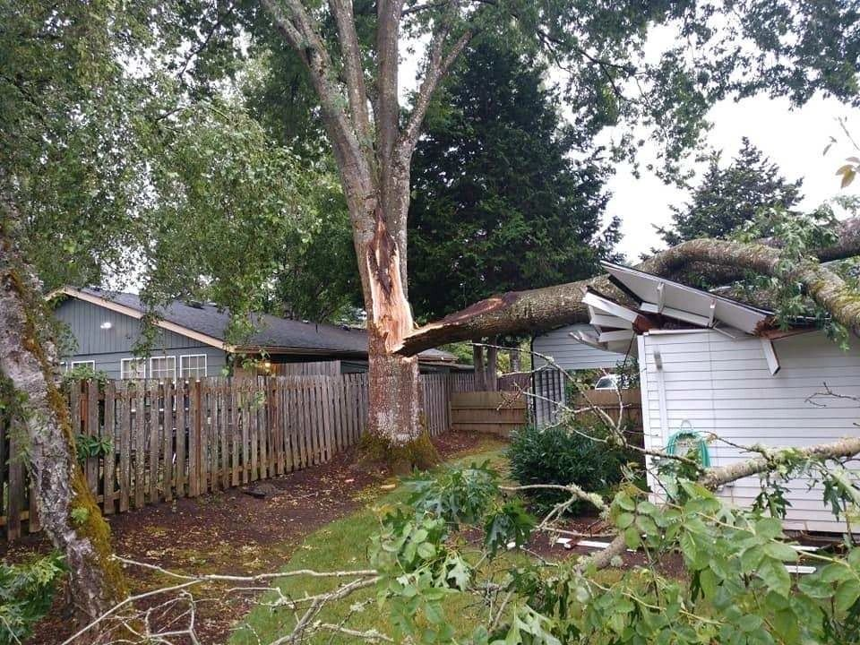
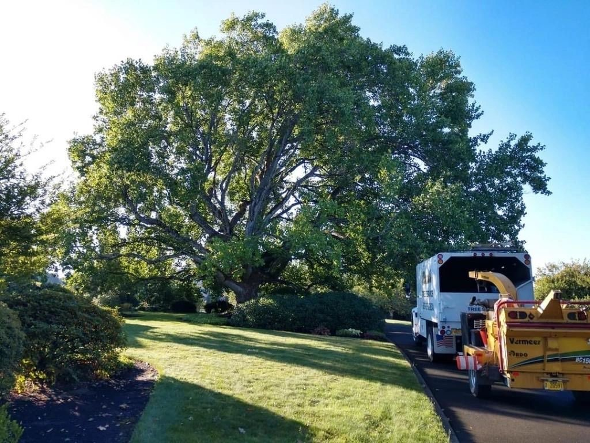
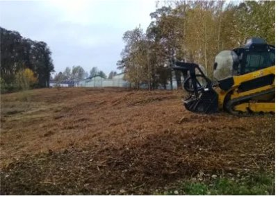
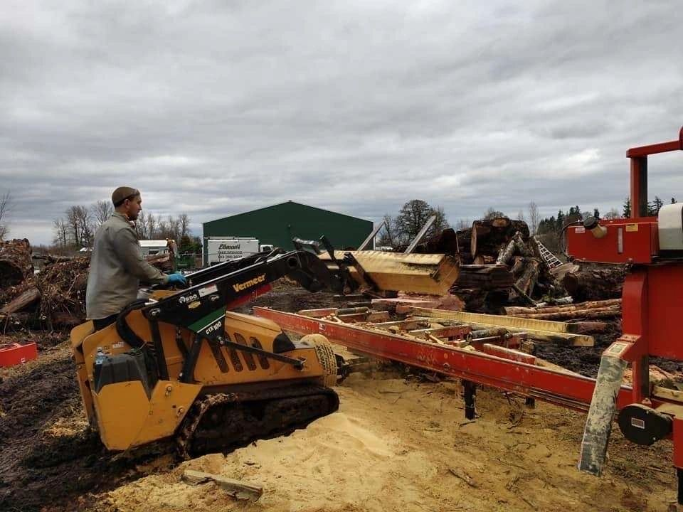
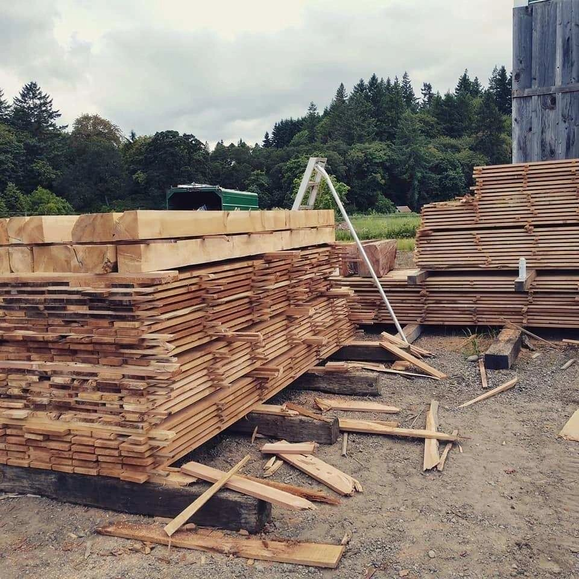

Everything a tree needs, done properly.
Modern arboriculture from a Salem company founded in 1981: Certified Arborist PN #0735, Oregon CCB #62724, licensed, bonded and insured.

Tree pruning
Trees give shade, filter the sun, muffle noise and act as a wind break. Neglected, they can make a whole yard look shabby, so keep them healthy: fertilize regularly, prune, and control the pests that affect them. Be nice to your trees, and they will be nice to you.
Proper pruning follows the one-third rules: never remove more than a third of the crown, and main branches should be at least a third smaller than the trunk diameter. Never “top” a tree.

Stump & tree removal
Trees bring real benefits to homes and cities, but when they fall and injure people or damage property, they become liabilities. Recognizing and reducing tree hazards keeps your property, and your neighbors’, safer. Some hazardous trees are best removed. Where possible, plant a new tree in a suitable spot as a replacement.

Crane-assisted removals
Some trees are too big, or stand too close to a house, to be felled in one piece. With a crane, the tree comes down in sections that are lifted out and lowered safely.

Storm damage
Elwood’s will help you in your time of need. When storms hit, trees around your home can fall and limbs can break and damage your property. Call us and we will help remove your trees and clear the debris.

Tree preservation
Some trees are worth every effort to keep. Elwood’s consults on root problems, aerates soil, installs cabling and bracing and assesses tree value after damage.
In 1990 Elwood Newhouse adopted the Salem Heritage tree at 1692 Liberty Street NE, a European beech planted in 1902, to preserve, prune and feed it.

Construction trauma
Construction can devastate the trees around it if nothing is done to protect them. Broken branches and trunk wounds are only the beginning: damage to the root system is what most often kills the tree.
Ideally an arborist is called in during planning, when trees can still be preserved. If your trees were affected by recent construction, call us promptly. We assess each tree for viability and hazards and recommend treatments.

Brush mowing
Brush mowing and land clearing. Commercial mowing leaves land with an attractive appearance, free of brush and small trees. We mow down blackberries, scotch broom and small trees up to 6–8″ in diameter.
See more on our Brush Mowing Extreme website, brushmowing.com, or call 503.390.2838 for details.
Plant a tree today for the future
We need trees to survive. They supply the oxygen we breathe, absorb carbon dioxide, lower air temperatures, cut down noise, give shade and shelter, and feed and house wildlife. We offer recommendations for choosing the right tree for the right place, and soil aeration.
- 1Choose a tree that won’t grow too big for the spot and that was never “headed” in the nursery.
- 2Set the crown 1½″ above soil level. Mulch 4″ deep and 2″ away from the trunk, and paint the trunk with white latex paint to avoid sun scald.
- 3Soak the ground weekly during dry spells, stake no longer than a year, prune properly and weed without line trimmers.


We’re hiring
All applicants need a driver’s license. Please include the last 3 years of your driving record, which you can get at dmv2u.oregon.gov, along with the employee application.
Not sure what your tree needs?
Call the office or send a message, and tell us what you are seeing.